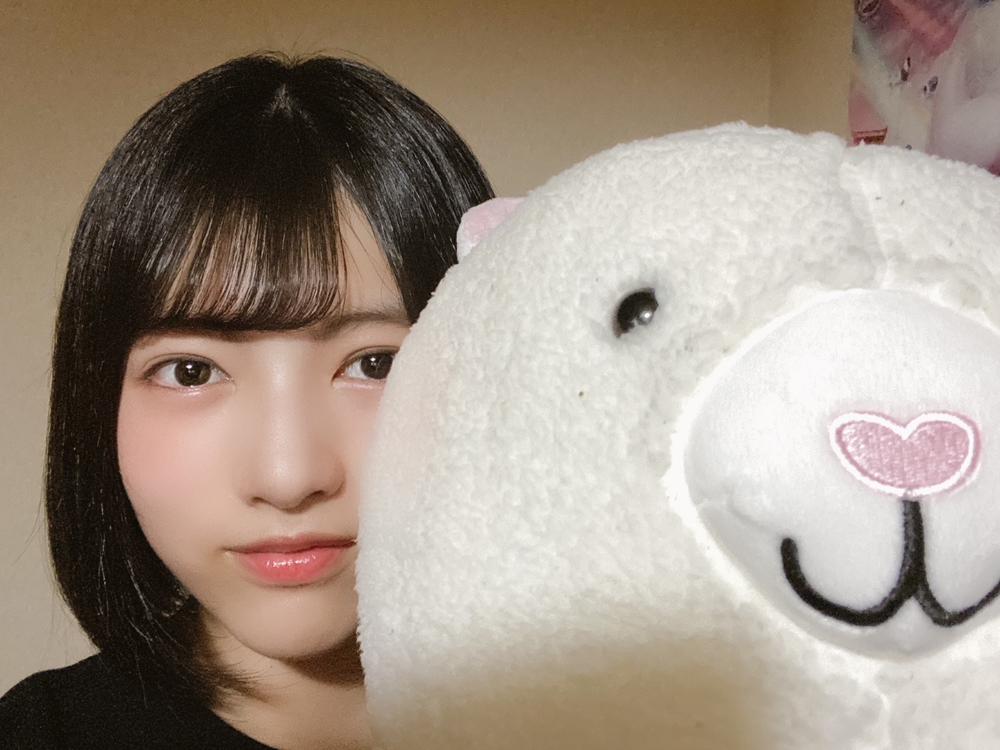

2020/0628Sunお疲れ様です！林瑠奈ですよ〜
本日もお疲れ様です。
乃木坂46新4期生の林瑠奈です。
神奈川県出身高校2年生16歳
華咲くシックスティーンの林瑠奈です。
負けるなしょげるな林瑠奈、今日も1日頑張るな
(ピンポーン)
Q なおの関西弁とるなぴの関西弁とではちょっと雰囲気が違うね。
Qスマホの中に入ってるチェキは璃果ちゃんかな？
Q (iPhoneから送信2連続は確信犯やな)
A 何度か書き直してコピペしたのでミスです。今回はしっかりと確認して消しました。
Q トークは弓木ちゃんがまわしてたけど、林瑠奈ちゃん立ち位置が真ん中だったからずっと映ってたよね。めっちゃ目立ってましたよ。
A 46時間テレビでの1番の反省です。もっと上手くみんなに回すことができていればと今更ながらに思っています。
3日目の朝になおが、『今日は何の日だっけ？？』とわたしに振ってくれたのですが、全く見当もつかなかったわたしは、「え、なんかあったっけ」と完全に素のテンションで答えてしまってましたね。
父の日だなんて知りませんでした。こちらも反省です。
ということで今日お話しするのは、本当は母の日付近で書こうと思っていた
『Q お母さんはどんな人ですか？』についてです。
例年であれば、母の日には何かしらの贈り物をするのですが、今年は思うように外出できる状況ではなかったので自粛した母の日。
わたくしの母一言で、尚且つ第三者目線で言いますと、林瑠奈の分身と思ってもらって構わないです。
笑いのツボ、怒りの沸点、テンションの上がるポイント...... こちらの3つに関してはほとんど一緒と言えます。
しかし、わたしと違うところもありまして、それはコミュ力の高さや人望など、
『生きていく上であった方がいいよねコレ』というものがわたしよりも長けています。
わたしにとって母親とは、母であり、親友であり、父であり、1番自分を理解している存在であり......etc
世間で言う『16歳の娘と母親』よりは距離が近く、よくここまで仲良くやってこれたなぁと自分ごとながらに感心です。
最近アンケートに書いた、
『これがなかったら生きていけないというものは？』
『無人島にひとつだけ持っていくとしたら？』
はどちらも『お母さん』です。
形にすることだけが感謝ではないです。
むしろ、形にならないものの方が想いを運んでくれることもあるのです。
感謝大事感謝大事感謝大事感謝大事感謝大事感謝！！
みなさんもお母さん大切にしましょうね。
...........................................................................
次回予告
【お待たせ致しました！寄ってらっしゃい
みてらっしゃい！！ みんな大好き黒見回〜！！】
です。お楽しみに。
さて明日はミュウちゃんです。
みゆちゃんモノマネのレパートリー増やしとくね。

みんなが大好きや〜
今度16人で写真撮りたいな。
ふと、わたしの中で愛が動いた。
星が綺麗ですね。
アディオス！！！
コメント(315)
最初に自己紹介!!!
るなぴの妹設定の小学6年生、はるです(´▽`)ノ
コメント1回目です☆
ーーーーーーーーーーーーーーーーー
前のブログはコメント遅くなってごめんね～>_<
ーーーーーーーーーーーーーーーーー
お姉ちゃ～ん♡ 46時間TV、おつかれさま(*^-^)ﾉ 私的には、お姉ちゃんは今回の46時間TVで、めっちゃキャラが出せてた気がしてます～。きっとファンもふえたね!!! よかった、よかった。
蘭世さんと仲良しになれたみたいで、こっちもホッコリしたよ☆ありがとね(*´∀`*)ノ 蘭世さんの電視台に出ててビックリした(ﾟoﾟ)/!!!お洋服も似合ってたよ～(^-^)/
白目が印象深かった！新4期生の中で、1っ番輝いてたきがするヾ(o´∀｀o)ﾉ
あらためて、よく頑張ったね～！（上から目線）すごく楽しめたから感謝☆
ヾ(o´∀｀o)ﾉ
ーーーーーーーーーーーーーーーーー
お姉ちゃんに質問ぜめ☆
○好きな絵文字は？
○今度のブログまでにチャレンジしたいことは？
○好きな芸能人は？
以上で～す。答えてね♡(*´∀`*)
ーーーーーーーーーーーーーーーーー
グッズ届いたよ～(^-^)/めっちゃ可愛いかった！！！生写真コンプしたよ～。
キーホルダーも届いて、もぉ、幸せだよ～♡ お姉ちゃんに、トキトキメキメキ～♪(*ゝω・*)ノ
ーーーーーーーーーーーーーーーーー
握手会いきたい。それまで待っていてほしいな～(。・∀・。)ノ いつか生で会おうね！大好きよっ♡
ーーーーーーーーーーーーーーーーー
お姉ちゃんにマツミンやってほしいミン(*^^)るなミン!!!
ーーーーーーーーーーーーーーーーー
46時間TV、だいぶ前に終わったのに、色々話してすまない！m(_ _)m
次を楽しみにしてるね～!!!
ーーーーーーーーーーーーーーーーー
あしたからまた1週間が始まるけど、頑張ろうね～(´▽`)ノ
お姉ちゃん大大大好き♡
アディオス☆
♡HARU♡
ピンポーン
るなちゃんが持ってるぬいぐるみってくまなんですか？
めっちゃ気になりますｗｗｗ教えてください！
ブログ更新ありがとう！！
46テレビでるなちゃん大活躍でしたもんね笑
明るく元気な姿が見えてとても良かったです。
これからも応援していきます
邁進邁進
次回！！
黒見ちゃん回やってくれるのですね！！！
めちゃくちゃ嬉しいです、楽しみです！！
ブログありがとう！！！
お母さん大好き！！！
新4期大好き！！！
アディオス！！
46時間TVはたーくさんうつってくれて嬉しかったー！
世界中の隣人よのさいごらへんで抜かれまくって困り気味なるなぴんも可愛かった〜そして今更だけどマフラータオルのセンス最高よね！
次回のブログもたのしみにしてます(｀･ω･´)
ブログ更新ありがとう！！！
昨日もかわいいですね
ブログ更新ありがとう！！！！
今ね、るなぴのネームボード作ってたの！！！！
いつかるなぴに見せれる時が来たら持っていくね
無人島にお母さんを連れていくくらいお母さん思いのるなぴ
大好きです！笑笑
また更新待ってます！！！
さきほ
林さんの父はどんな人ですか？
以上次回のブログ更新楽しみにしてますね！！！
可愛いの権化だね
かわいいね
かわいいね
かわいいね
今日はここまでにしとくね。
アディオス！！
gracias！
応援してますね(●´ω｀●)
毎回楽しみにしています。
学校行くときにるなぴの画像みて頑張っています！
携帯に入ってたチェキは璃果ちゃんだったんてすね☺️
るなりか大好きです。
次のブログも楽しみにしてます。
ブログリレー13周目ありがとうございます！もう一周早く来ないかな？ともう思ってしまいました。
るなぴ質問に答えてくれてありがとう！
俺もチェキの事くらい知ってたし(•́⍛•̀; ≡ •́⍛•̀;)笑
俺はるなぴが乃木坂46に来てくれて感謝感謝です！！
あ、ちなみに母にも感謝してます!!
早く16人で集まった写真みたいな！！
質問〇るなぴはベット？布団に入ると何分で寝れる？？
気温が変わりやすい日が続いているので体調には気を付けてね！
るなぴのアイドル人生が上り坂でありますように！！
ゴードンでした！
アディオス！！
新4期朝の見たよ！るなぴが積極的に話そうと頑張ってて良かったよ！！
アディオス！！！
キザっぽく言ってみたぜ。
若さ爆発でこれからも頑張ってな。
頑張ることは頑張れる内しか出来ないから。
応援してるぜ(*´ω｀*)
乃木中とかでるなぴのお母さんが出演する日を待ってます！お母さんと仲良いのいいですね！お母さんもこんな可愛いいい娘がいて嬉しいと思います！お母さんの偉大さってやっぱり凄いです！僕ももっと母には感謝しなきゃ！って思わされました！
質問です
お母さんの好きな手料理はなんですか？
白目もお母さん譲りだったりするんですか？笑(2人の白目ツーショット見てみたいかも）
でははははわわわわ………(^^)/ 凪
お母さんるなぴの分身みたいって親子ですごい楽しそうやね！笑
これがなかったら生きていけない、無人島に持っていくなら
「お母さん」って絶対お母さん喜ぶやつ！！
16人で撮る写真エモそう！
また書くね〜
はるはる
アディオス！！！
絶対あると思ったのにほんまに消しとんかい！
僕も今回は短めにいきます。
質問「授業中寝てたらガクンってなることあるよね？」
めっちゃしょうもない質問ですね。
そんじゃ今回はこの辺でアディオス！！アディオス！！！
(大事なので2回言いました！)
いろんな企画があっていろんなメンバーが活躍してたけど
一番かわいかったのはるなぴだぜ（イケボ）
お母さん大好きなんやね笑
父親的存在でもあるのはすごいね笑
お母さんみたいになれるといいね！
これからどんどん忙しくなると思うけど
たまには自分の好きなことやってリラックスしてね！
あと最後のポエムっぽいのが結構好きです
アディオス！！！
お母さんと仲良いのすごくいいねぇ！そしてその46時間TVの時も後ろにいたぬいぐるみは何のモチーフ？アルパカ？ラッコ？なんなんですかそれ笑
そして16人での写真も楽しみにしてます！
また待ってます！
ブログ更新お疲れ様(´･ω･｀)
今後ともお母さまを大切にね(´・ω・｀)
「いつまでもあると思うな親と金、無いと思うな運と災難」
実体験からも、この言葉は正にその通りだと思います
遅れたけど、46時間TVもお疲れ様m(__)m
蘭世さんと2Sトークはガチガチやったね
でも、面白かったよ(｀・ω・´)
最後の愛称決めもね
【新4期生で繋ごう】は2日連続で見られて良かった
でも白目は安売りしない方が良いよ
【蘭世さん電視台】でスタイルが良いのがバレたね
だけど、最後の蛇は笑った
【4期生企画 みんなでお菓子の家を作ろう】
4期生全員が分け隔てなく協力できる、
この企画が出来て良かったね
提案してくれた賀喜ちゃんありがとう
元々の4期生と仲良くなれて良かったね(｀・ω・´)
未央奈からサイン貰えて良かったね(｀・ω・´)
（では・ω・また）
お母さんの話をしているのがとても楽しそうに感じました！
次回の黒見ちゃん回も楽しみに待っています∫∫∫
まだまだ不安定な天気が続いていますね。
学校生活のリズムは戻ってきましたか？
私は最近小説にはまっております。
読む頻度はその時々なのですが、今週は3冊目に突入いたしました。
推理小説やミステリ系が好きなので何度もページを行き来して読んでおります。
るなちゃんは好きな本や小説はありますか？
最後に質問をさせてください。
Q.写真に登場しているのは4号さんですか？
じめじめした日が続きますが、なにか心が晴れるようなことに時間を割いて乗り越えましょう！
それでは、アディオス！！！
るなぴたんの関西弁好きだから今度全部関西弁でブログ書いてほしいな！という一方的なお願いを残しておきます☺︎
るなぴたん大好きだよ〜❤︎❤︎
４６時間ＴＶが終わって、早１週間が経っちゃったけど、時間だけは「止めることなく動いていく」から、４６時間ＴＶも「１つの大切な思い出」として残っていくんだろうねぇ～(●´ω｀●)って、今日のるなぴのブログを読んで思ってたよぉ～( *´艸｀)
もう４期生ちゃん５人のリレー形式ブログも、１３回目となり、ガッチガチだった１回目の時より緊張もほぐれ、自分の事を「もっと知ってもらおう」という気持ちにもなり、時々「素」が出ちゃったりしている５人だけど、これからは４期生ちゃん１６人として物事は動き始めると思うし、楽しさも厳しさも沢山あると思うけど、るなぴも乃木メンになった事だし、他の４期生ちゃん１５人と共に一緒になって、いろんな事を見聞きして乃木活を楽しんでね☆彡
にしても、最近は天気も急に暑くなったり、雨が降って肌寒くなったりと落ち着かない天気だけど、るなぴも体調には十分気を付けて、引き続き楽しい乃木活をしてね☆彡
そして、新４期生ちゃんは５人しかいないから、あっという間にブログが回ってきて、「今回で何回目だったっけ？」っていう事が僕の中では多々あるから、嬉しい反面「もうそんなに書いてるのかぁ～」っていう驚きもあったりもするんだぞぉ～♪
今日のブログ写真も、どことな～くるなぴに似ている「アルパカ」かな？めっちゃカワイイし、最初「どっちがどっちだっ(；ﾟДﾟ)」って思いながら見てたよ(笑)( *´艸｀)
それじゃあ、次のブログもめっちゃ楽しみにしてるねぇ～ヽ(^o^)丿また５日後に会おうね♪
明日も一日！一緒にお家時間を楽しもうね♪大好きだよ♪るなぴ☆彡
46時間テレビお疲れ様でした^_^
2日目の新4期の時間の自己紹介最高でした！笑
お菓子の家もすごかった！
46時間テレビをみてからるなちゃんのことがますます気になりだしました！
またコメントします！
越後のはるだよ〜！
お母さんって本当にありがたい存在だよね。
自分はひとり暮らし始めて改めて気付かされた。
母は偉大です。
昨日僕は久々に映画館で映画を観たよ！
今、一生に一度はジブリを観ようっていう企画でジブリ4作品が再上映されているんです！
自分はゲド戦記観たんだけど、やっぱりテレビのと全然違って、迫力が凄かったし、音楽が最高だった。
テルーの唄を聴いた時、感動で涙止まりませんでした。
るなちゃんは、ジブリだと何が好きかな？
世代じゃないかもだけど、ジブリは本当にオススメ！
また、次のブログでね。
越後のはるより。
言ってないだけでうちもチェキ入ってたの気付いてたで！！
誰のだろうとは思ってたけどまさかの…笑
次回は963回ということでもう既に考えてたかもしれないけど、963ちゃんの意外な一面を教えてほしい〜！るなぴとの関係性も知りたい！
ではまた〜！
iPhoneから送信
コメントする

PROFILE
新4期生リレー
202104
| SUN | MON | TUE | WED | THU | FRI | SAT |
|---|---|---|---|---|---|---|
| 1 | 2 | 3 | ||||
| 4 | 5 | 6 | 7 | 8 | 9 | 10 |
| 11 | 12 | 13 | 14 | 15 | 16 | 17 |
| 18 | 19 | 20 | 21 | 22 | 23 | 24 |
| 25 | 26 | 27 | 28 | 29 | 30 | |

待ってた！！